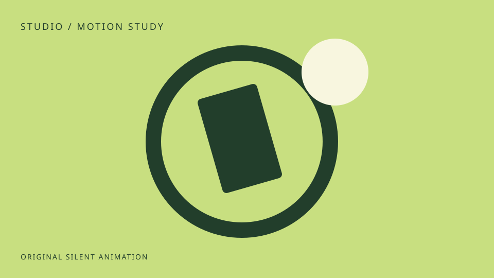

MOTION DIRECTOR / 1.0
美感被保留。
变化有来源。
完整覆盖与连续表达的可操作机制样本：真实文字与UI进退、缩略图到视频窗口、无歧义的Icon反馈，以及纯视觉润色。它不证明其他项目已经修复。
01 / AESTHETIC VALUE
纯视觉，也可以有价值。
这层轨道润色只表达品牌气质与氛围，没有业务功能。无阅读、操作或性能冲突时保留；不因“非功能性”删掉。
持续运动可暂停；系统减少动效时停止。
02 / MEANING BEFORE EFFECTS
加号还是加号，播放仍指向播放。
分别悬停、用Tab聚焦、按下。透明控件采用局部缩放与颜色反馈，没有新增底板，也不旋转语义图形。
等待操作；第二个控件只显示预览提示，下方可播放实际视频。
03 / SOURCE → WINDOW → SOURCE
视频窗口来自这张缩略图。
点击打开，再尽快关闭；可重复打开。窗口从同源图像的位置展开，背景与内容分轨；Escape关闭，返回原链接焦点。

播放本地动效短片 · 约4秒本地自主生成的无声视频，真实video元素与播放/暂停控件，界面全程没有进度条。关闭立即暂停；来源移走时采用短退出，不飞向旧坐标。
向下浏览到文字和UI退出，再向上返回。
04 / REAL TEXT & UI
这一整组内容会进入、离开、重入。
标题、正文和按钮属于同一真实内容组。视口中央稳定阅读，接近上下边缘才低幅进退；返回时从当前可见关系接续。无JS与减少动效时保留静态完整内容。
视口内聚焦或按住时保持可读；离屏后仍能完整退出与重入。
这段留白用于完整退出与反向测试。